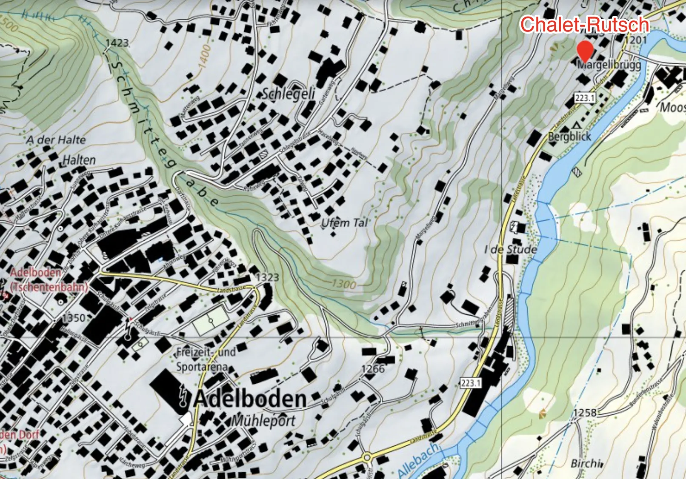
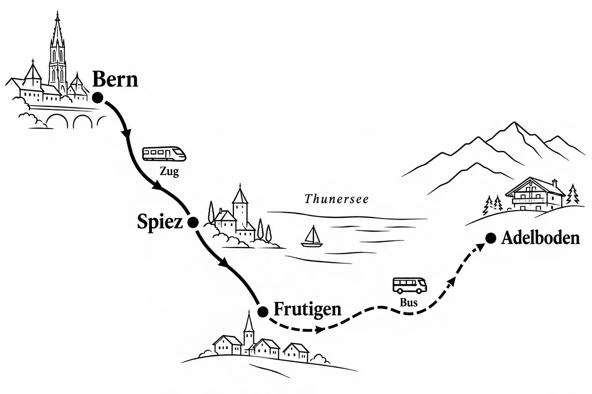
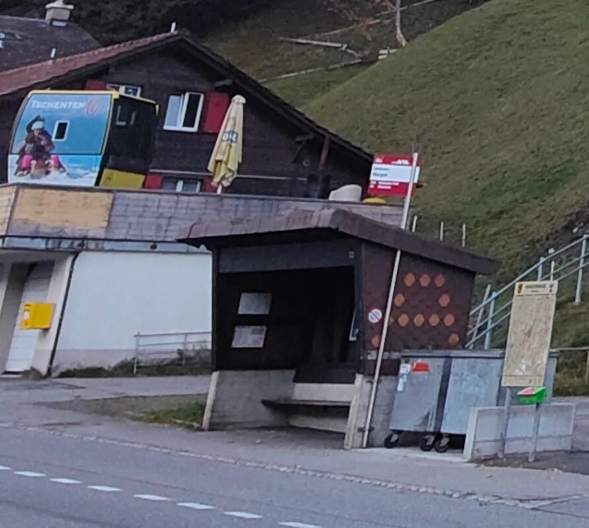
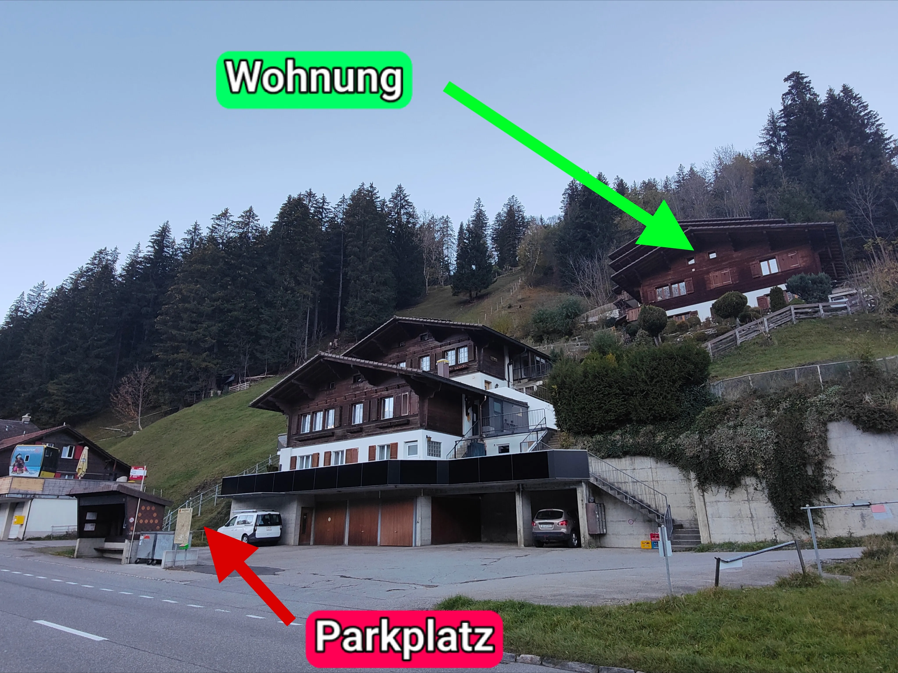
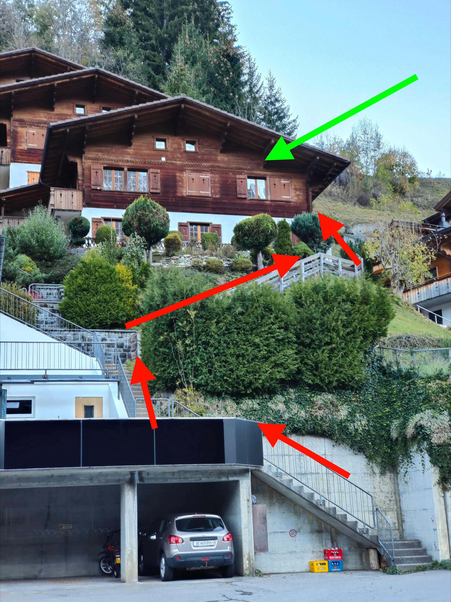

Ihr Weg ins Berner Oberland
Lage & Anreise
Das Chalet-Rutsch ist am Dorfanfang von Adelboden.
Von der Bushaltestelle und dem Parkplatz führt eine Treppe direkt hinauf zur Ferienwohnung.

Chalet-Rutsch
Landstrasse 1013715 Adelboden
Berner Oberland, Schweiz
Anreise
-
Anreise mit dem ÖV
Bequem mit dem Zug von Bern über Spiez nach Frutigen und weiter mit dem Bus direkt zur Haltestelle Margeli in Adelboden.


-
Anreise mit dem Auto
Von Bern über Spiez und Frutigen nach Adelboden. Unser Privatparkplatz befindet sich hinter der Bushaltestelle. Er ist über eine flache Zufahrt gut erreichbar. Für die Anreise im Winter empfehlen wir eine geeignete Winterausrüstung für Ihr Fahrzeug.

-
Über die Treppe hinauf zum Chalet
Von der Bushaltestelle / Parkplatz steigen Sie über eine Treppe direkt zur Ferienwohnung hinauf. Bitte berücksichtigen Sie den Treppenweg beim Transport Ihres Gepäcks. Der Zugang ist nicht barrierefrei.

Fragen zur Anreise?
Haben Sie Fragen zur Anreise, dem Parkplatz oder dem Weg zum Chalet? Kontaktieren Sie uns.